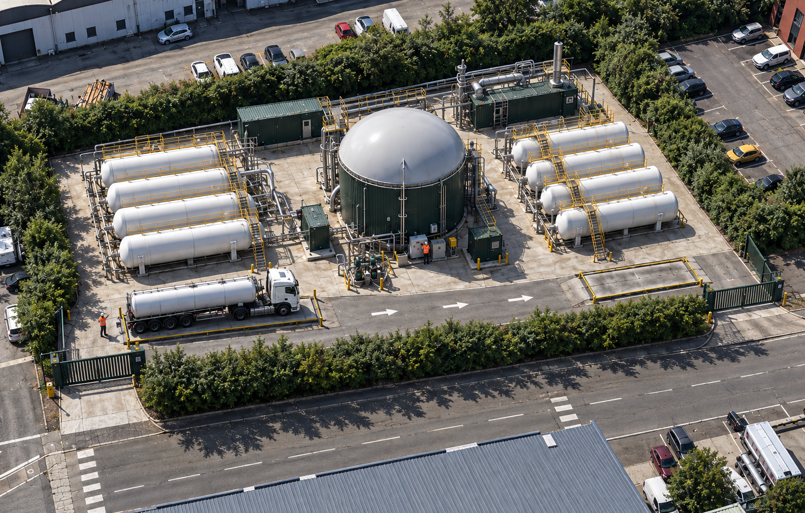

Nous avons fait un choix structurant : plutôt qu'une grande unité industrielle, déployer de nombreuses petites unités, chacune dimensionnée pour son territoire. C'est ce choix qui supprime l'essentiel des risques et nuisances habituellement associés à la méthanisation.
Les unités de méthanisation industrielles ont besoin de gisements massifs (plus de 20 000 tonnes/an) qui sont, dans les faits, très difficiles à sécuriser localement. Elles nécessitent aussi de grandes surfaces d'épandage, ce qui crée des tensions foncières, notamment près des zones urbaines.

Contrairement aux méthaniseurs agricoles, notre technologie est spécifiquement conçue pour digérer les biodéchets alimentaires (restauration, ménages), avec un système d'agitation dédié et un hygiéniseur intégré.
Technologie fournie par notre partenaire Arkeale, déjà éprouvée sur des installations en fonctionnement (dont une unité de référence de 1 000 t/an à Colmar, en Alsace). Ce type d'unité compacte et modulaire s'appuie aussi sur des standards déjà déployés à l'international par des acteurs comme Seab Energy ou Enwise.
Le digesteur est enterré et étanche. Les phases de réception des biodéchets se font en espace confiné avec traitement de l'air, comme dans un commerce alimentaire.
Les équipements sont carénés et fonctionnent en continu à bas régime — le niveau sonore est comparable à celui d'une pompe à chaleur résidentielle.
Une unité de 5 000 t/an génère quelques rotations de camions par semaine, un trafic comparable à celui d'un commerce de proximité.
Les unités respectent les prescriptions ICPE applicables à la méthanisation (rubrique 2781) : détection gaz, évents de sécurité, distances réglementaires.
Le plan d'épandage porte sur moins de 70 hectares en circuit court et est validé avant même le lancement de l'unité — pas de recherche de foncier dans l'urgence.
Hauteur limitée, bardage bois, digesteur enterré : l'unité s'intègre visuellement à son environnement agricole ou périurbain.
Compte tenu de leur taille, nos unités relèvent en général d'un régime ICPE allégé (déclaration ou enregistrement) plutôt que de l'autorisation environnementale complète requise pour les grandes unités industrielles — sans jamais s'affranchir des exigences de sécurité et de suivi environnemental.
Chaque projet fait l'objet d'un dossier réglementaire complet, réalisé avec des bureaux d'études spécialisés, et d'un dialogue engagé en amont avec les mairies, les intercommunalités et les services instructeurs (DDT, DREAL/DDPP).
Échanger avec notre équipeNotre première unité est actuellement à l'étude au 15 rue du Dauphiné à Saint-Priest, au sein d'une zone d'activités déjà occupée par des entreprises — loin des habitations. Elle sera dimensionnée pour traiter 5 000 t/an de biodéchets, soit environ 30 Nm³/h de biométhane injecté sur le réseau GRDF.
Ce site vitrine a vocation à démontrer, en conditions réelles, que le modèle France Méthanisation tient ses promesses : coûts maîtrisés, absence de nuisance, dialogue continu avec les parties prenantes locales.
Le biogaz est un mélange de méthane et de CO₂, comme dans une installation de biogaz agricole classique. Nos unités respectent les prescriptions de sécurité ICPE (détection de fuite, évents, distances réglementaires) et leur petite taille limite fortement les quantités de gaz stockées à un instant donné, réduisant d'autant le risque potentiel.
Nos unités enterrent le digesteur et confinent les phases de réception des biodéchets avec traitement de l'air. La matière première (biodéchets alimentaires collectés régulièrement) est comparable à ce que traite déjà un commerce de restauration.
Pour une unité de 5 000 t/an, on compte quelques rotations de camions par semaine pour l'approvisionnement et l'évacuation du digestat — un trafic très inférieur à celui d'un site industriel classique.
C'est un fertilisant organique qui se substitue aux engrais chimiques. Le plan d'épandage est validé avec les exploitants agricoles locaux avant le lancement de l'unité, sur une surface de moins de 70 hectares.
Comme toute installation classée pour la protection de l'environnement (ICPE), nos unités sont soumises au contrôle des services de l'État (DREAL/DDPP) et à des obligations de suivi et de déclaration régulières.
Une grande unité concentre le risque, le trafic et les besoins fonciers en un seul point, souvent loin des gisements réels. En multipliant de petites unités au plus près des biodéchets, nous réduisons les distances de transport, le risque, et nous facilitons l'acceptation locale.